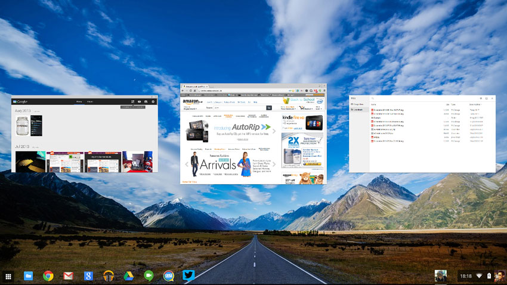

Google Project: ChromeOS UI Features


C++ - Linux
During my second internship with Google, during the summer of 2023, I worked on the fronted for ChromeOS.
Specifically, I made UI upgrades to ChromeOS' Overview Mode. Because ChromeOS is open source, I can share
some code pointers below. Note that I uploaded about 25 code changes that summer, but I am only sharing
3 of them here to provide just the highlights.
I improved the performance and UX of ChromeOS Overview mode, with an 8% increase in
smoothness and 193 ms decrease in latency ms, by implementing a new window placement layout
algorithm for ChromeOS Lab.
See here for a code snippet
Designed and implemented a ChromeOS Lab feature that improves the feel and discoverability of
Overview mode by adding a smoother entry animation that is more responsive to trackpad events.
See here for a code snippet
Launched an internal developer tool to simulate trackpad events in a virtual environment.
See here for a code snippet